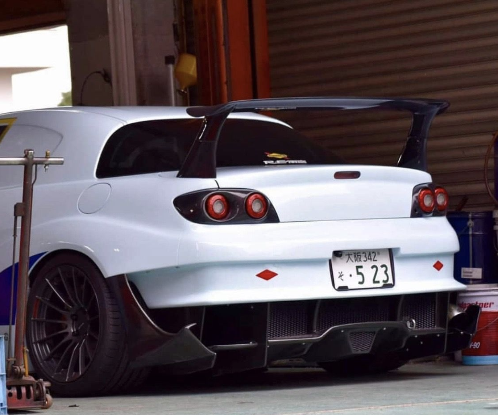
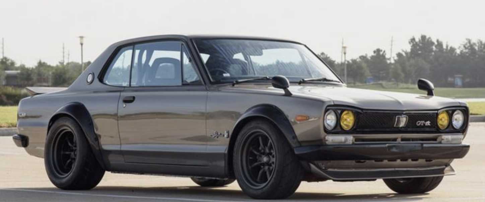
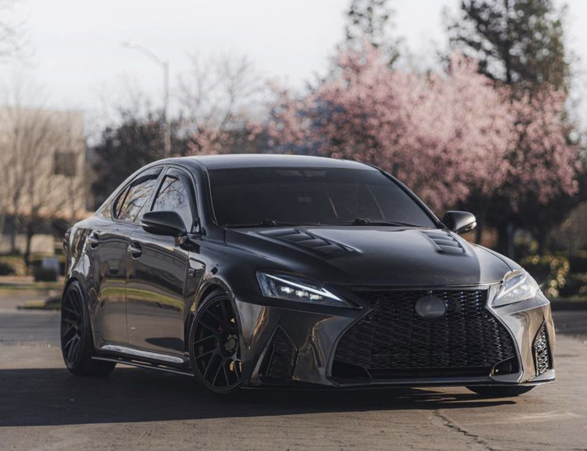

2010 Mazda RX-8 | Drift Build
What is Drifting?
Drifting is a driving technique where the driver intentionally oversteers, causing the rear tires to lose traction while maintaining control through a turn. It's a motorsport that prioritizes style, angle, and car control over pure lap times.
Build Breakdown
- Engine Swap (Lexus 1UZ-FE): The rotary engine was swapped for the legendary 1UZ V8. Why? The 1UZ provides massive, reliable low-end torque, which is crucial for breaking traction and maintaining long, sweeping drifts without stalling or bogging down.
- Suspension & Angle Kit: Extended control arms and a custom angle kit allow the front wheels to turn at extreme angles, keeping the car sideways for longer periods.
- Welded Differential: Locks both rear wheels together so they spin at the exact same speed, ensuring predictable and consistent breakaway.
- Hydraulic Handbrake: Mounted next to the steering wheel to instantly lock the rear wheels for initiating drifts at high speeds.
See it in Action

1972 Nissan Skyline | Touge Build
What is Touge?
Touge (meaning "mountain pass" in Japanese) refers to street racing on narrow, winding mountain roads. It requires a car that is incredibly agile, lightweight, and responsive, as the tight corners and elevation changes leave zero room for error.
Build Breakdown
- Lightweight & Stripped Interior: Every unnecessary ounce of weight was removed. Why? A lighter car changes direction faster and requires less braking force, which is vital for tight mountain hairpins.
- Turbocharged Engine Setup: A responsive turbo setup provides a sudden surge of power on corner exits without the lag that would upset the car's balance mid-corner.
- Big Brake Kit: Mountain passes require heavy, repeated braking on steep descents. Upgraded rotors and pads prevent brake fade and ensure consistent stopping power.
- Stiff Coilover Suspension: Minimizes body roll during rapid direction changes, keeping the tires planted on the uneven mountain asphalt.
See it in Action

2012 Lexus ISF | Time-Attack Build
What is Time-Attack?
Time-Attack is a motorsport where the sole objective is to set the fastest possible lap time around a dedicated race circuit. It is the ultimate test of a car's aerodynamic efficiency, mechanical grip, and overall consistency.
Build Breakdown
- 9-Speed ZF Sequential Gearbox: The stock transmission was swapped for a sequential. Why? It allows for lightning-fast, clutchless shifts, keeping the engine perfectly in its optimal powerband without losing momentum in high-speed corners.
- Aero Package (Splitter, Wing, Diffuser): Generates massive downforce to push the car into the track at high speeds, allowing for much higher cornering velocities.
- Upgraded Cooling System: Time-attack puts engines under maximum load for entire laps. Upgraded radiators and oil coolers prevent overheating and maintain consistent power.
- Data Logging (Motec/AIM): Tracks every metric from suspension travel to tire temps, allowing the team to micro-tune the setup for tenths of a second.